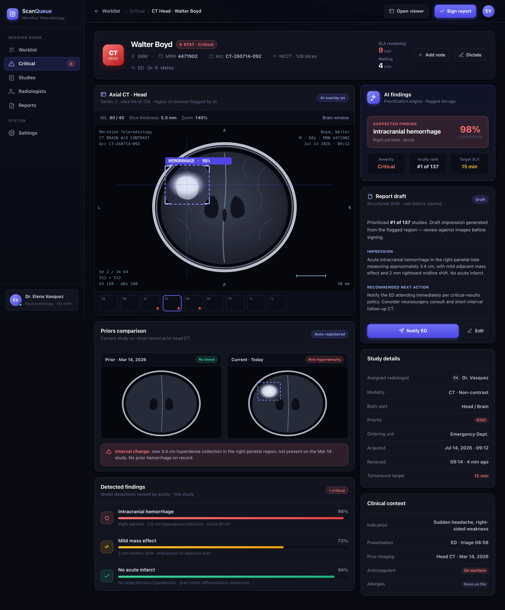

Ingest & detect
Every CT, MR and X-ray is analysed on arrival. Detection models look for emergent findings — hemorrhage, pulmonary embolism, large-vessel occlusion, pneumothorax — and attach a confidence score.
ScanQueue reads every incoming CT, MR and X-ray, flags suspected critical findings for a STAT read, and re-orders each radiologist's worklist by acuity and SLA — so an intracranial bleed never waits behind a routine chest film.
When studies are read in arrival order, an emergent intracranial bleed can sit behind a stack of routine films. ScanQueue reads every study on arrival, flags the emergent ones, and pushes them to the top — before a human has even opened the list.
ScanQueue sits between the modality and the reading room — turning a raw stream of studies into an ordered, SLA-aware worklist for every radiologist on shift.
Every CT, MR and X-ray is analysed on arrival. Detection models look for emergent findings — hemorrhage, pulmonary embolism, large-vessel occlusion, pneumothorax — and attach a confidence score.
Each study gets an acuity rank and a live SLA countdown. Critical flags jump the queue; the rest order by clinical priority and time remaining — never by arrival alone.
Studies land on the right radiologist's list — matched to subspecialty and current load — with a draft impression and prior comparison ready before the read even starts.
BuildspaceLabs built the MVP front end: a dark reading-room worklist for triage across the shift, and a per-study detail view with the AI findings and a report draft.
Live queue depth, critical flags and turnaround KPIs sit above an acuity-ordered worklist — critical rows escalated in red, each with a suspected finding, wait time and SLA countdown.

An AI findings panel with the suspected finding, confidence and severity; an abstract region-of-interest overlay; a priors comparison; and a structured report draft with the recommended next action.

Detection, prioritization and reporting consolidated into one radiologist surface — nothing left in a paper list or a second screen.
An acuity-ordered reading queue with live queue-depth, critical-flag and turnaround KPIs above it.
Suspected hemorrhage, PE, large-vessel occlusion and pneumothorax flagged for a STAT read with a confidence score.
Every study carries a target SLA and a live countdown, so an emergent read never quietly breaches its window.
A bounded region of interest marks where the model saw the finding, so review starts at the right slice.
Auto-registered prior studies sit beside the current one, calling out the interval change that matters.
A draft impression and recommended next action per study — the radiologist edits and signs, always in control.
ScanQueue never signs a report or hides a study. It triages and prioritizes — surfacing what looks emergent with an honest confidence score — while every read and every sign-off stays with the radiologist.
Delivered as a production-quality MVP in a ten-week engagement.
We build AI-native products like ScanQueue. Tell us about your reading-room workflow and we'll show you what prioritization looks like on your modalities and SLAs.